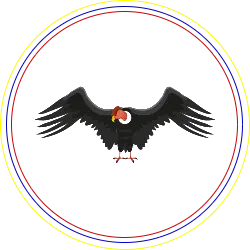

Ecuador

Galápagos
Aeropuerto Ecologico Galápagos
Cruise to Galapagos
Metropolitan Touring
Galapatours
Descubriendo Galapagos
eBird
iNaturalistEc
Wikipedia
Charles Darwin Foundation
Ecuador Galapagos Info
Happy Gringo
Nature Galapagos & Ecuador
Peace and Love
Provincias del Ecuador
El rincon de Sele
GoRaymi
Mapcarta
Shutterstock
GAD MUNICIPAL SANTA CRUZ
Gobierno del Ecuador